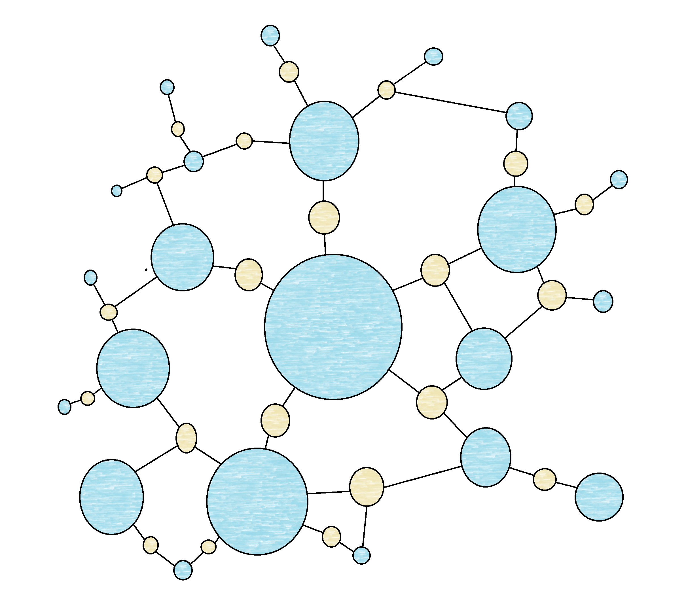

| Chemotext is a search Engine of MeSH Terms and articles. Relationships were created between every MeSH Term and every article the term is referenced in. This allows to make complex connections between MeSH Terms through various articles allowing for the search of new relationships between MeSH Terms. |  |
Chemotext was thought of by Nancy Baker in her paper: Mining connections between chemicals, proteins, and diseases extracted from Medline annotations.